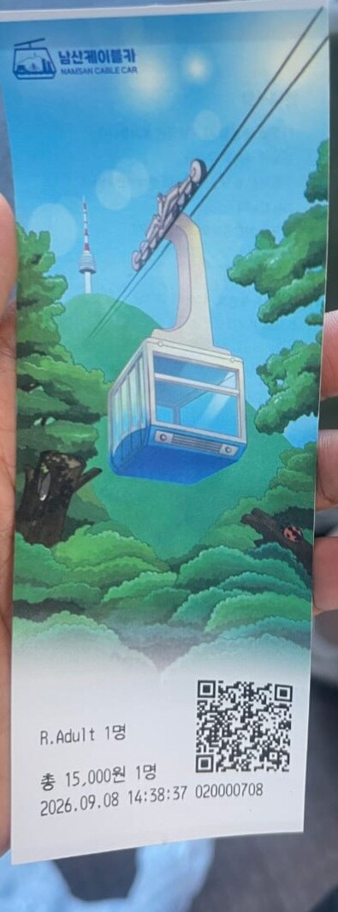
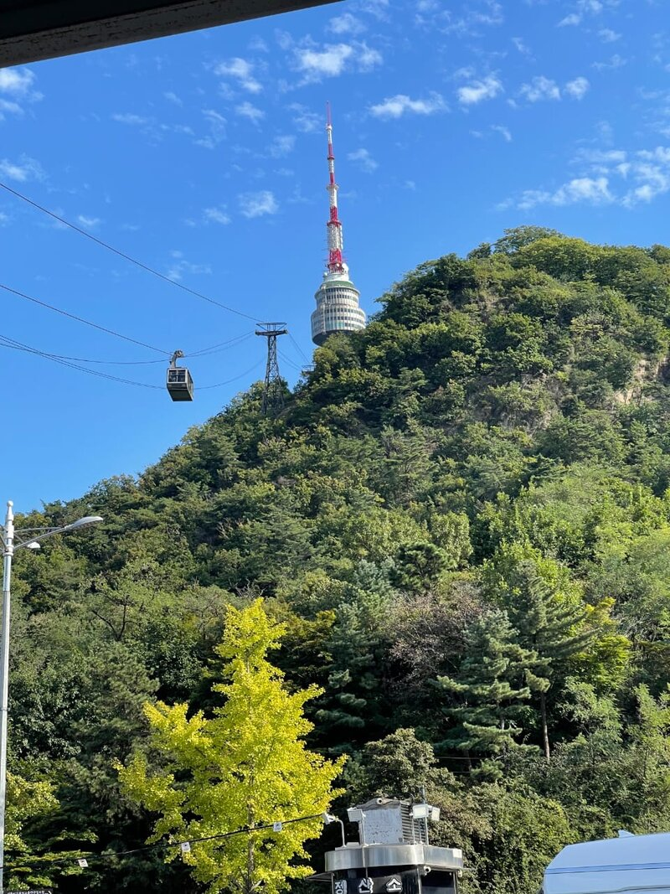
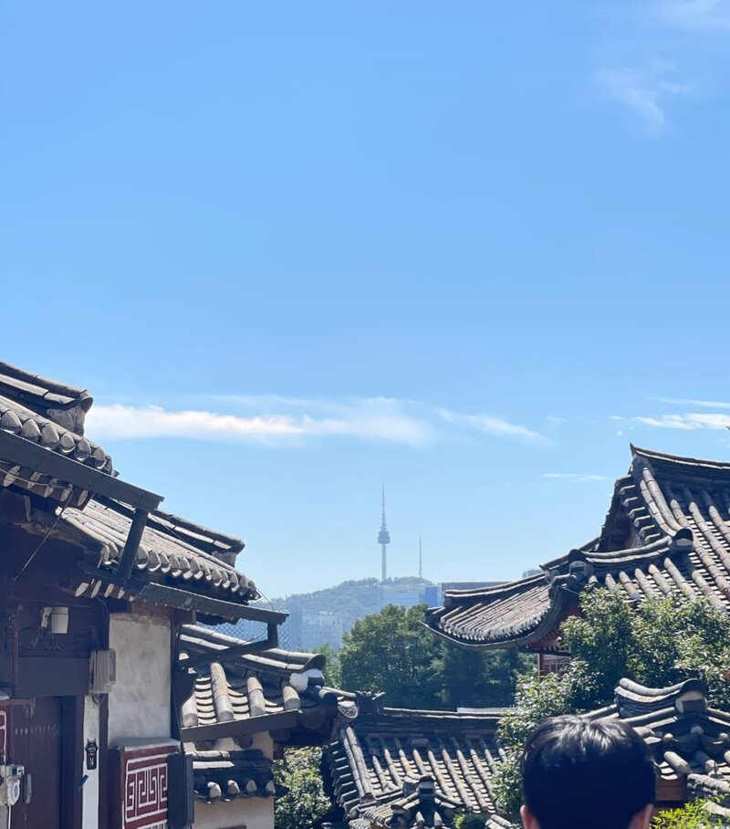
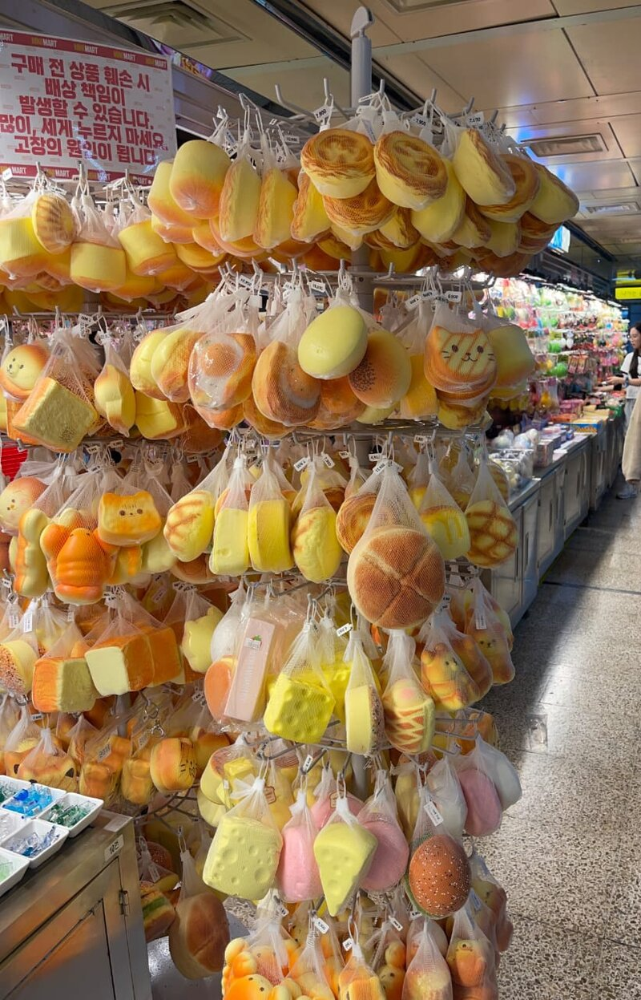
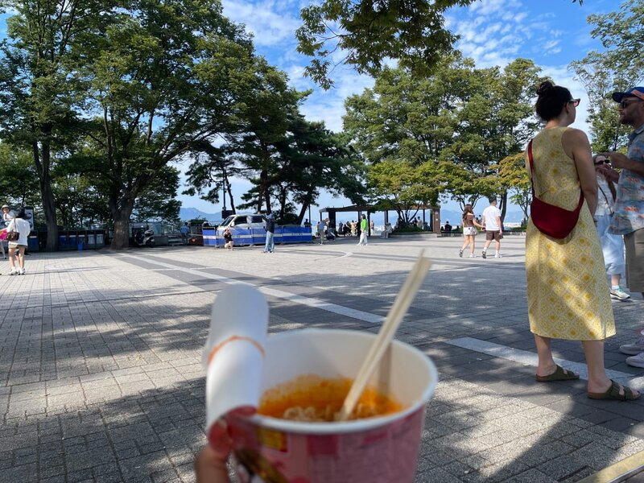

Seoul, South Korea
Up to Namsan Tower
A day through Bukchon Hanok Village and Myeongdong, ending with the cable car ride up to Namsan Tower.
Photos from every stop, newest first.

A day through Bukchon Hanok Village and Myeongdong, ending with the cable car ride up to Namsan Tower.

N Seoul Tower crowning the hill, the cable car crossing overhead on its way up.

Looking out over Bukchon's tiled hanok roofs toward Namsan Tower, still a walk away on its hill.

A Myeongdong stall packed floor to ceiling with squishy bread and cat-shaped keychains.

Spicy cup noodles in hand at the top of Namsan, taking in the plaza after the cable car ride up.

A boat easing back to dock while jet skis cut across the marina waterway, towers lighting up and rippling in the water as evening sets in.

An evening stroll along Dubai Marina's promenade, towers catching the last light as the street below fills with cars and cyclists.

The Marina skyline settling into blue hour, glass towers going quiet as traffic keeps moving below.

Coming in over Addis Ababa — rooftops and neighborhoods spreading out below on arrival.

The Parisian lit up after dark along Macao's boulevard — one of the strip's more theatrical façades.

A live DJ set under red and purple light inside Le Carré d'As — Liège after dark.

Sunlight down a narrow Madrid street near La Pecera — warm façades and a van working its way uphill.

The trailhead sign marking the start of Bogotá's steep climb up to Monserrate.

A fence layered with padlocks at Mirador al Norte, looking out over the valley and Bogotá below.

A quiet gallery room inside the Botero Museum — wide wooden floors and one still-life painting holding the wall.

Aircraft parked on the apron at El Dorado, with the Andes rising behind Bogotá's runways.